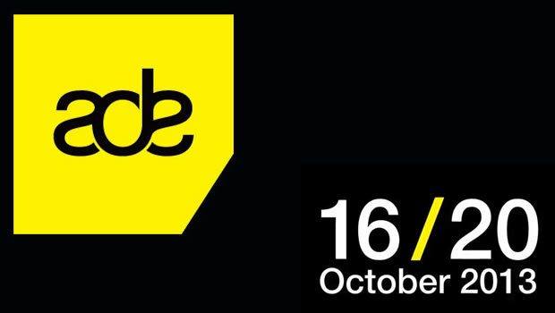
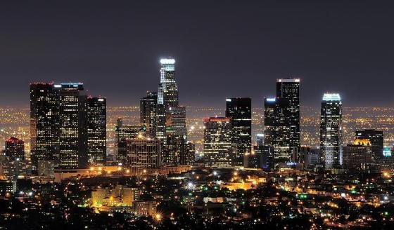

Data Transmission At ADE


Amsterdam Dance Event (ADE) has cemented itself as one of the premier events on the global dance calendar – both for the clubbers who descend for the hundreds of parties and events that happen across the city during the week, as well as for the conference aspect that draws in the industry from all over the world. This year ADE was bigger and better attended than ever, and Data Transmission was there to report on some of the key discussions during the week.
“We finalized the deal an hour ago. Instead of the previous 75-percent, ID&T is now going to be 100-percent owned by SFX. Now it’s very clear, I work for SFX”.
These words were spoken to a packed conference room on the Thursday afternoon of Amsterdam Dance Event (ADE) late last month, by ID&T CEO and co-founder Duncan Stutterheim, where he revealed that full ownership of his leading Dutch events company had been passed over to the American SFX powerhouse.
The occasion was a Q&A between Stutterheim, and SFX head of acquisitions Shelly Finkel, who revealed last year that his company would be making a $1 billion investment into the dance music sector, in the wake of its explosion in popularity in the US. With this kind of industry star power on hand, the room was predictably packed to the rafters. However, it was also a good indication of the sort of big business and deals that were going down at ADE this year.
For many, the draw of ADE is limited to the simply amazing number of parties happening during the week, with 300 events across more than 100 different clubs and venues, from modest club nights to spectacular Awakenings techno parties at Gashouder, a 10,000+ capacity venue that hosted an unprecedented five-night run of sell-out events. No less than 300,000 people converged on Amsterdam for ADE this year, from around both Holland and the rest of the world.
It’s one of the essential occasions on the global clubbing calendar; though it’s all built from the ground up around the industry component of the conference, which this year drew 5,000 industry professionals to Amsterdam, as well as an additional 2,000+ DJs and artists. Every corner of the industry was present; booking agents, promoters, publicists, record label owners, up-and-comers hustling for a record deal… You name it; they’re all at ADE.
It was a record-breaking year for ADE, with the conference sprawling across five different hotels. The central meeting place though was the Felix Meretis, with thousands gathering in the meeting rooms, bars, foyer and spilling out across the canals outside. The Felix was also the location for many of the conference’s key panels, roundtables and keynote interviews, where some of the industry’s biggest players got together to talk the big issues of 2013
EDM’s great goldrush
Whilst SFX’s full acquisition of ID&T might have been he big news of the panel, Finkel also had a lot more to say about the potential for synergy between the ever-growing list of companies joining his EDM empire. So far these include Beatport, the Australian events company behind the Stereosonic festival tour, and a raft of US promoters that includes Disco Donnie Presents, Dayglow Productions and Life In Colour; and shortly after the conference it was announced SFX had also acquired Made Event, the company behind the Electric Zoo series of events.
“We want to offer partnerships, for us it doesn’t stop at offering sponsorships,” said Finkel. He hinted at future synergy opportunities for the SFX empire, offering an example of a new digital strategy that will see Beatport extended as a digital content platform. Stutterheim also indicated ID&T will be working closely with the other events companies that are part of the SFX empire, and that he’d helped bring America’s Life In Colour events to Europe this year.
“When SFX acquires your company you can be part of the ticketing company, Beatport, our design company and our infinity program,” said Finkel. “SFX is the one place to get everything. We offer the full package, whether it comes to touring or breaking a new artist”.
Stutterheim’s attitude this time around was markedly different to last year’s ADE, when he’d been coy about selling to investors. “‘We used to joke to each that we would sell the company for a hundred – a hundred thousand guilders. Then, suddenly someone from America wanted to give us a hundred. A hundred million dollars. The choice was very difficult. But we didn’t do it. I think that this company can continue for another twenty years, that we may go into the world.”
This year though, Stutterheim shared a few details about how he was convinced to join SFX. “We had worked together in the US,” he said. “But at that point we really believed that we wanted to be a Dutch company creating shows, and we believed we had a strong market across a number of countries…but sometimes the idea needs to incubate.”
“As we continued to work together, at some point a list came up of the possibilities of what could be done if we sold the company. TomorrowWorld [the US spinoff of Belgium’s hugely successful Tomorrowland event] was an example of that; the festival cost 16 million dollars to put up. Those are amounts of money that we just don’t have. We are a big company, but we can’t invest that kind of money. So it was an opportunity for the company to grow.”
Corporate synergies aside, Finkel also took the chance to take a dig at what’s possibly the biggest, and slowest moving target in American dance music: Las Vegas, and how much the casinos are playing DJs to perform in the extravagant clubs they’ve been opening.
“A little disappointing is Las Vegas”, said Finkel. “They are paying artists a lot of money because they receive their income in ways we don’t. Their business model is different because they also gain income out of their hotels and casinos, money that is being invested in the EDM scene by paying the DJs twice or three times as much compared to SFX.’
However, he said he doesn’t see any major market destabilization in its wake. “Artists come to me and say: ‘I will play in Vegas to make money, I will play at your events for the fans’.”
Sin City under the microscope
Finkel’s comments about Las Vegas are a common refrain that has rung out regularly since last year’s ADE, when ID&T’s Stutterheim complained that his festivals were now competing with Las Vegas casinos for DJ talent, who were basically in a position to offer DJs a blank cheque.
“What’s happening now is that the agents are being total pricks. They are coming to us and saying, our DJs are being paid paying $250,000 for a night. This is the kind of money they are asking for, and then at the same time, we have events like Mysteryland and Tomorrowland, where we’re also looking to book these acts. So we’re competing now with casinos.”
Las Vegas ended up being a key talking point at another of the conference’s biggest panels, Global Club Culture: State of the Club Nation Debate on Wednesday afternoon that saw some of the industry’s biggest players assembled to talk the future of dance culture.
Some of the muscle assembled on stage included Beatport CEO Matthew Adell and ID&T’s other head honcho Irfan van Ewijk, as well as two club promoters on the opposite ends of the American dance music spectrum – Nicolas Matar who’s recently opened the widely-discussed Output in NYC, which he modeled on Berlin’s Berghain, as well as James Algate, one of the names behind the Global Gathering festivals worldwide who this year moved to Vegas to promote the recently opened Hakkasan club for the MGM Grand Casino.
Matar maintains there is a “strictly no bottle service” policy at Output, and at times looked less than impressed with the fact that a Las Vegas promoter was sitting right across from him, sharing his distaste for the commercial dance that’s swept the US in recent years.
“I don’t think I’m distancing myself from it,” he said, “because I was never a part of it to begin with. I look at EDM as a different type of pop music. I’ve been championing underground house and techno for almost 25 years. So for me, it’s just a passing fad that I’m not really a part of.”
However, Hakkasan’s Algate was more than willing to concede that a gulf the size of the Grand Canyon exists between what the two are doing.
“I think Nicholas and me are polar opposites. A DJ that plays at Output, he’d get booed off stage and drinks thrown at him if he played at Hakkasan. That crowd needs the high energy, they come to Las Vegas because they want to have a good time and be entertained. They don’t want to have to listen to half an hour of deep house. We’ve tried. It doesn’t work”.
Algate fought back against the claims coming from the likes of claims that Las Vegas is solely responsible for skyrocketing DJ fees. “It’s supply and demand… If you don’t pay the money, you’re not going to get them. It’s not that Las Vegas skews things. All of the press about Las Vegas fees should be taken with a pinch of salt. Half of it isn’t true, and the other half was written before the club was even opened”.
While Algate emphasised the importance of VIP and bottle service, particularly for a club that represents a $130 million investment for the MGM Grand Casino (“one of the most expensive clubs ever built”), he reinforced his love for the paying punters who just come to dance.
“Everything in Hakkasan was built around the dancefloor. It’s the biggest in Vegas; you can fit 1,000 people on it. Of course we ultimately need to ring the till… but we also need to make sure the dancefloor is filled. They’re just as important, because without them you don’t create the right environment. We will not put extra tables on the dancefloor.”
Tiga talks numbers. So many numbers…
Anybody growing tired of all the big business going down at ADE found their salvation on Thursday when Turbo Records frontman Tiga hosted his very own panel, The World According to… Tiga, flanked by a formidable posse of fellow speakers that included Seth Troxler and Canada’s Matthew Dear AKA Audion. Remaining speaker Dubfire never showed, presumably after partying too hard at his SCI+TEC label showcase the night before. However, in his absence he was flatteringly referred to by the panel as “that old guy”.
“Everyone is so fucking serious in dance music.” Those hilarious words rolled right off Troxler’s tongue, and they summed up the vibe of then panel perfectly. The broader topic of discussion was the increasing commercialisation of dance music, and what was spotlighted as the inbuilt obsession within DJ culture over “the numbers” – starting with booking fees and air miles, though stretching to DJ rankings, Facebook followers and BPMs even.
“When numbers come up, I tend to space out a little bit,” Troxler said. “Up until some point I did care about charts and rankings… Now I look at Facebook and I can’t really care anymore about the stupid shit they’ve got going on. But my management still checks it, probably.”
Tiga presented the notion that DJ culture was overly eager to plug into the binary code of the digital era. “Electronic music was the first to get onboard with digital files, Facebook followers… Even the absurdity of the DJs willingly allowing themselves to be classified and ranked, and the acceptance of these numbers as concepts. It’s partly depressing, and partly obsessive… As an artist, how are you meant to switch from counting your air miles and checking your sales, to at the same time being creative and free? Because they’re very different ways of thinking.”
“Why is it so uptight? It’s ‘biz-world’,” Troxler continued. “From the stage it’s all hedonism and everyone having a good time. Behind the scenes though, it’s a bunch of old CEOs playing records.”
Largely though, things were never allowed to get too serious; the trio’s sense of humor was never too far away. “Is dance music the most commercial scene in the world, period?” Tiga posed early on. Or phrasing it differently; “Is this the first time in music history where we’re seeing 10,000 kids in North America screaming, T-shirts off, for a 46 year old?”
Otherwise on the panel, Tiga argued the concept of “selling out” no longer exists; though the act of pandering openly for votes in a DJ poll being the one exception that gets you a red card.
Dance music and drugs – the topic that never goes away
Last year at ADE the Association for Electronic Music (AFEM) was unveiled to the world, a not-for-profit trade association established for the sake of offering a united voice for dance music culture, as well as a platform for sharing knowledge across the industry. On Thursday morning of the conference, the AFEM held their fourth board meeting, and later in the day some of the association’s high-profile members gathered to discuss the big issues.
And again, it was a formidable gathering of industry muscle that spoke on the panel; Duncan Stutterheim from ID&T, Richie McNeil from Australia’s Stereosonic festival, the promoter behind some of India’s biggest festival brands Nikhil Chinapa; in addition, the panel was moderated by Ben Turner, owner and director of Graphite Media in London, the artist management company responsible for representing Richie Hawtin among others.
“I’ve seen the power of talking with a unified voice on key issues,” Turner said. “However, we’ve often also been disparate as an industry. In a time when there’s so much interest in this music from America, investors and big media outlets, after it’s taken us 20 years to get them to take note of this music; it feels like a really important time to try and bring people together”.
Turner said the issue that dominated the AFEM board meeting on Thursday morning was the drug deaths that resulted in Electric Zoo in New York being shut down in back in September; as well as the death that occurred the following month at Warehouse Project in the UK.
“Today’s meeting was 75 percent consumed by that topic,” Turner admitted. “We definitely have an imagine problem around the world”.
Richie McNeil from Stereosonic in Australia revealed that a drug death had also occurred at a recent festival in Australia, not too long after Electric Zoo. However, he emphasised the strong process that exists in Australia to help manage the risks around illegal drug use. This involves a thorough consulting process with councils, police, hospitals and other stakeholders; ultimately, it means the festival promoter can show it has done everything in its power to mitigate the risks.
Nikhil Chinapa from India expressed his concerns that these kind of processes have yet to be implemented amongst his country’s festival organisers.
“I wouldn’t be completely off the mark if I called it a ticking time bomb,” Chinapa said. “Dance music isn’t really looked at closely by the authorities at the moment, in terms of the processes in place before you acquire your permits. Unless we’re able to come up with ourselves, like has been done in Australia… There’s self regulations we need to impose on ourselves”.
Chinapa also championed a closer relationship with the mainstream media, in order to communicate the processes that are put in place to ensure punter safety, and help avoid the demonization that dance culture often suffers.
“If we’re able to bring journalists into our festivals and show them what we are doing, and what systems we are putting into place; if and when an incident does occur, these people will end up becoming the voices of dance music, and they’ll be able to put forward a balanced view.”
Another time the drugs issue surfaced was during the keynote interview of Bob Lefsetz; a American music industry veteran who authors one of the world’s most popular music blogs, an ex-lawyer and record company executive famous for his outspoken, and to-the-point observations on where the industry is going. Lefsetz says the issue is ultimately a result of what happens when a counter-culture breaks through into the mainstream.
“Drugs are a lightning rod, because they hate this music, and they’re saying, ‘we have to stop it’. In America it’s all just the beginning, and people are afraid of the unknown. But what’s dangerous today is commonplace in the future, so you don’t have to worry. 20 years ago Alice Cooper was considered dangerous; these days, he’s a Republican who plays golf”.
The DJs speak
As per expectations, ADE this year featured a number of high-profile DJ interviews, which saw them opening up to the audience in a Q&A setting. The most popular was without a doubt Hardwell’s Q&A on late Saturday afternoon, only a few hours before he was announced as the new #1 in DJ Mag’s ‘Top 100’ poll (which was definitely the worst kept secret of ADE).
“Sorry, I partied too hard last night,” Hardwell said with a smile and a very hoarse voice, no doubt a result of the Revealed Recordings label showcase he’d hosted the night before. The panel had a personal focus, where the Dutchman opened up about his rise to the top.
“When I started as a DJ, I was inspired to play with vinyl. Scratching was really fascinating, so I wanted to learn everything about turntablism. To be honest, hip hop is so much more difficult to mix than just a regular house song. I wanted to be a real DJ, so that’s why I started playing hip-hop. From the age of 14 to 16, I played only hip hop sets at clubs in Holland.”
There was also an impressive posse of US veterans who were drafted in for special music talks during the conference. Enduring icon Danny Tenaglia discussed the EDM revolution with more than a whiff of “get off my lawn”, while US authority Tommie Sunshine shared some particularly wild stories about getting freaky in the early days of Chicago house.
“The minute I stepped foot in a club in Chicago when I was 16, I was like ‘holy shit … this music is going to change the world.’ The idea of being in a club and letting yourself go, fuelled by the music… From that very minute I knew the rest of my life would be dedicated to house music.”
“And taking LSD was what kicked it in even further. And that was when the rave scene began in the early 90s. I was in the basement of a public school in the south side of Chicago, and they turned all the lights off, and they were playing all these rave records that basically sounded like the Armageddon, that the world was ending. So they turned off all the lights, and they had a trashcan full of spiked punch with sheets of acid in it, and everybody at this party was fucking out of their minds. That was the moment where I said, ‘oh okay… this is really something else’”.
One of the other big Q&As though was with hip-hop and turntablist legend DJ Shadow, talking about his legacy as a cutting-edge performer, as well as addressing his infamous performance at Mansion Nightclub last year, which saw him being unceremoniously booted off the decks; for what was billed as the “last time ever” that he’d broach the subject.
As it turns out, Shadow is rather philosophical about the incident. “’Mansion was a case of where I was invited to a situation that was not conducive to my style of DJing’,” he said.
He also emphasised his uncompromising approach to DJing. “’There’s two camps within DJing. Most DJs are there to play what people want. I consider my DJ sets to be a creative expression. At the same time, I’m not trying to irritate the audience or bore the audience, I want them to enjoy it. But this is my instrument. It’s my art… Trying to make people like you is not art.”
The rocky path of staying independent
Big business dominated the discussions at ADE more than ever before, but on Thursday a powerhouse pack of independent label representatives came together to discuss some of the challenges of releasing club music in the digital era. The panel was based on the notion that nearly 15 years on from Napster’s disruptive influence, the smart players in the digital world have learned how to face the challenges via some clever solutions. Or have they?
“I don’t think the disruption is over yet. Our vinyl sales are decreasing, and so are our digital formats,” said Lionel Marciano, label manager for a number of independent stables that includes Real Tone Records, Bass Culture Records and Apollonia Music.
While there was a dash new-world optimism in the room, it was often outweighed by a sense of futility at the obstacles that need to be overcome. “It turns out there is no holy answer for labels in the new industry, and each company now has a different business model,” claimed Horst Weidenmuller from long-running Berlin-based label !K7.
Eelko van Kooten, owner of Dutch stable Spinnin’ Records, was somewhat more upbeat about embracing the new possibilities. “It’s not about money, it’s about the fanbase, about people knowing you have a new track. Music listening is sharing”.
However, Jon Berry from enduring German outfit Kompakt, who are celebrating their 20th anniversary this year, was less positive about the possibilities opened up by streaming. “Solutions like Spotify, they’re ridiculous. It’s just perpetuating this goddamn mess.”

The exodus to Los Angeles
One of the defining industry trends that reared its head at this year’s ADE was a shift of the big players to LA; Pete Tong had announced just a few weeks before that he’d be relocating, and Ben Turner reflected at ADE on why people are making the move.
“I definitely feel that for everybody in this business, who might like me have been working in it for 20-odd years; we’ve all been pushing so hard to make this music as big as humanly possible, because it’s in our nature to push things forward. For me, when I’m sitting in London, I find myself wondering what the hell I’m doing here; because everything I’ve been pushing for is happening in America right now. The newer, bigger opportunities are in the States at the moment”.
If the US will continue to be the industry’s eye of the hurricane in the coming years, the culture still has a long way to go. Beatport CEO Matthew Adell shared his insights on how things are developing in his homecountry on the Global Club Culture panel on Wednesday, and says he’s seeing the culture developing in real time; and interestingly, pointed to the growing interest in deep house, as the place where longtime clubbers might be able to get away from it.
“Who’s familiar with what a fratboy is?” he asked the crowd. “Well, there’s a lot of them going out in the United States at the moment. First let me say, I welcome them. Hands up everybody who’s had their lives changed by dance music? I can think of no constituency other than fratboys who needs their lives changed. So I’m thrilled to see them coming to the events, and I think dance culture can have an incredibly positive effect on the lives of people. However, if you want to get away from that crowd in the US at the moment, deep house is the best place to go.”